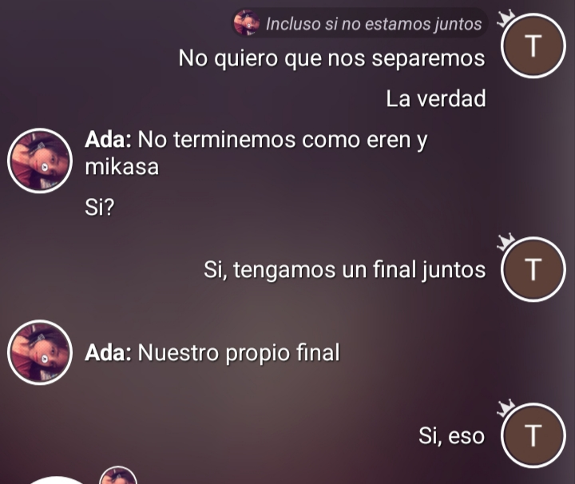
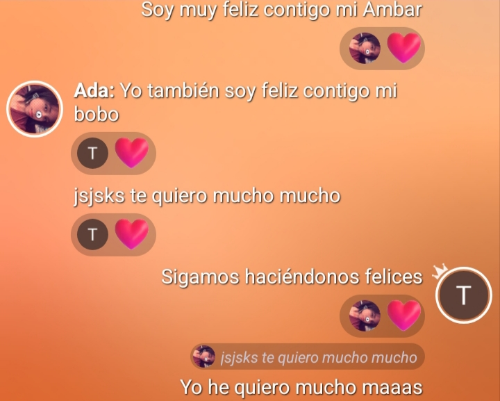
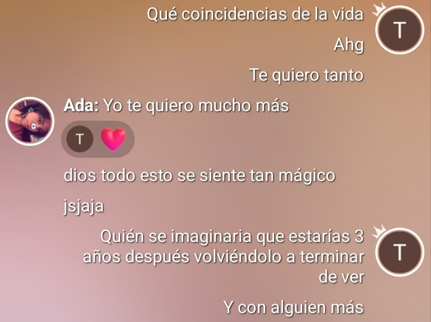
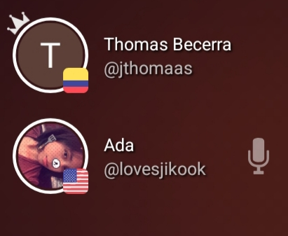

Hola Ada, este momento es muy importante para los dos, y por eso me gustaría hablarte de todo lo importante que eres para mí y porque te decido elegir todos los días de mi vida, por buenos o malos que sean.
Primero, debo reconocer que el conocernos fue algo que nunca esperé. No fue que yo te hubiese visto antes y hubiese dicho "como me gustaría que fuese mi novia".
Nunca hubo oportunidad, ni siquiera tenía en mi mente que existiera alguien como tú entre tantas personas que hay en este mundo.
El haberte contestado esa historia fue una pura apuesta a ciegas. Cuando lo decidí hacer, no esperé gran cosa, simplemente dije "bueno, lo voy a hacer para decirte que al menos lo intenté".
No tenía ni idea de si siquiera ibas a contestarme o solo ibas a bloquearme ya. Ahora lo recuerdo con tanta felicidad... En ningún escenario me imaginé como iba a terminar eso a partir de un meme de jjk que hablaba sobre trabajar.
El tiempo fue pasando, fuimos hablando más. Fui conociendo pequeñas partes de ti que me dejaban con ese "quiero saber más". Llegaron los primeros problemas, malentendidos y ahí por primera vez sentí miedo de perder aquello que íbamos construyendo de a poco, porque aunque fuese pequeño igualmente tú me interesabas.
Tuvimos una confesión muy extraña.
En medio de una discusión, de unas malas actitudes de mi parte, en medio de una confusión terrible que también dejo en evidencia que de alguna manera, aunque tú y yo coincidimos en varios puntos a la hora de conocer a alguien, también habían diferencias.
Me hizo darme cuenta que yo era más que todas esas malas actitudes que pude mostrarte en ese momento. No quería dejarte con ese sabor tan amargo que deja alguien que tiene a veces un desastre en su mente. Te quería, decidí que si de verdad quería que fueses tu, tenía que luchar por eso que tanto anhelaba contigo.
Se que varias veces me volví a tropezar en el camino, que cometí errores que no nos hacían bien y que ni yo mismo entendía porque terminaba diciéndote o haciendo.
Lo que si estoy seguro, es que soy más que todo eso, y por eso busco darte todo lo mejor que tengo en mi ser, todo el cariño, el amor, las bonitas palabras o los pequeños detalles en el día a día.
Todo esto, me hace darme cuenta que eres tú a quien debo elegir para compartir mis dias, eres tú a quien elijo en los días buenos, los días malos, los días en que no tengo ganas de saber de nada ni nada, los días en que me muero de la felicidad. Todos los días que te imagines, quiero estar contigo.
Lo mismo digo hacia ti. Me gustaría acompañarte siempre siempre pase lo que pasé y sientas lo que sientas. Porque tú me interesas y me gustas un montón por quién eres. ¿Es muy exagerado decir que me gustas solo por existir?. No creo, la verdad siento que así me pasa contigo.
El solo pensar que te vas a trabajar por las mañanas y saber qué existes me da felicidad. El ver qué hay un chat contigo me emociona, el ver tus fotos en mi fondo me da ánimos, el leer tus palabras me hace sentir muy querido, el leer o escuchar sobre tus días malos me hacen sentir parte de ellos (y aunque sean malos, siento que puede ser un poco mejores si me tienes contigo), el saber tus planes, los detalles pequeños de tus días, incluso si son una bobada, me gustan mucho y me hacen sentir parte de ti.
Definitivamente, haces mi vida mejor.
Tú eres quien yo imaginaba pero nunca supe que en realidad estabas más cerca de lo que creí. Nunca me imaginaba que estuviéramos conectados de tal forma, por un simple estado.
Incluso siento que hay tantas "casualidades" en nuestras vidas, como que hayamos nacido el mismo día (aunque de distinto mes) , o que nuestras ciudades se encuentren casi en el mismo grado de longitud (respecto al meridiano de greeenwich).
Esto significa que nuestras ciudades están conectadas respecto a un a línea recta desde el polo sur al polo norte (una explicación sencilla).
El hecho de que tú nombre sea taaan lindo me gusta mucho, siento que podría pasarme la vida entera buscando significados en tus cosas.
Siento que podría tocar y dedicarte tantas canciones que me preocupa el hecho de que nunca pueda terminar de mostrarte todo. Siento que siempre faltarán detalles por darte, palabras por decirte y momentos de felicidad por darte. Quiero que estemos juntos para poder darte todo eso que te lo mereces y tengo ganas de darte. Quiero que seamos la mejor pareja del mundo y que cada día nos hagamos más felices y explotemos de tanto amor que nos damos.
Por eso hago todo esto, porque se que es lo mejor para los dos, y decido hacerte esta pregunta:

